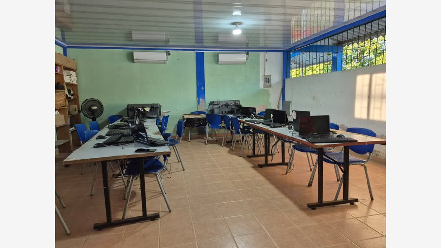
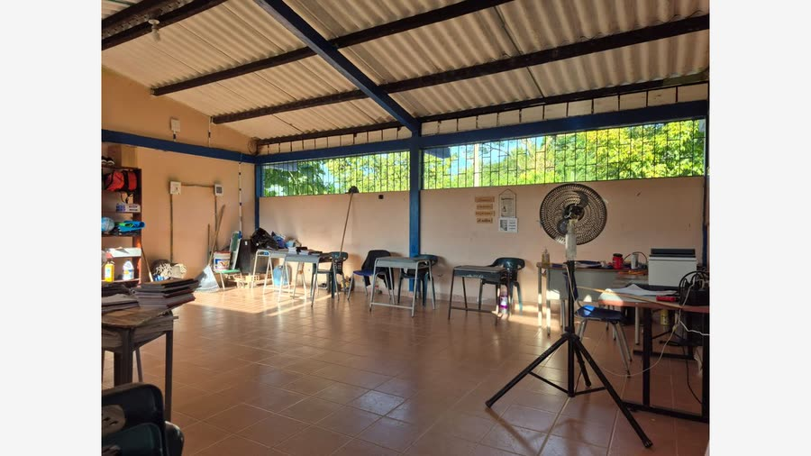
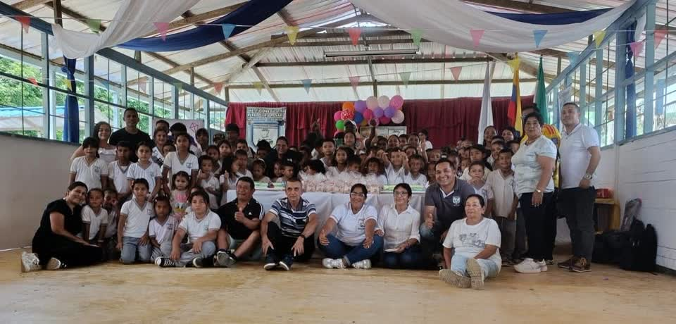
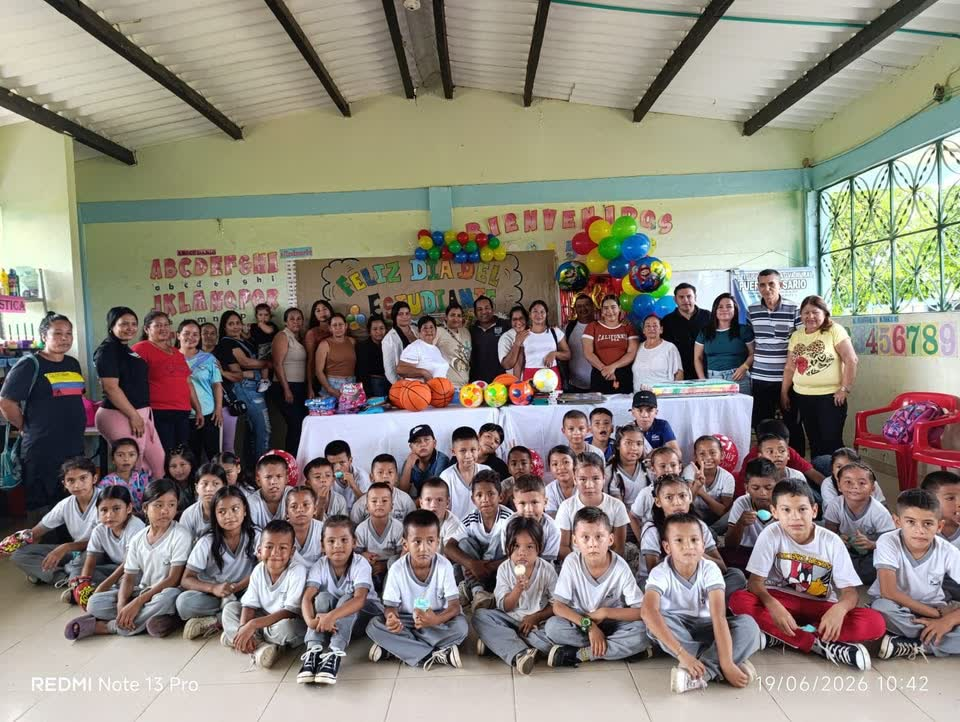
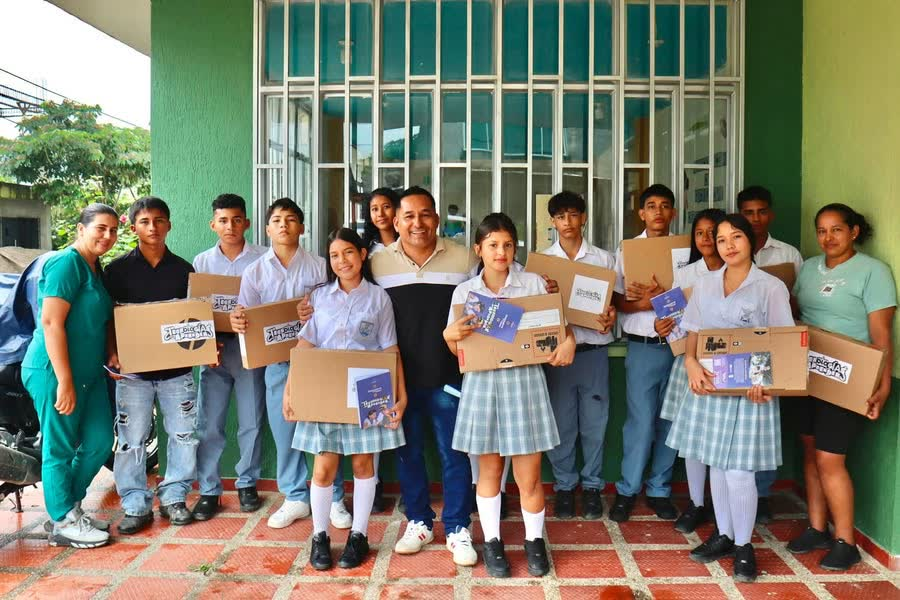
Educación rural en el Putumayo
Estos datos están tomados del encabezado de los documentos oficiales de la institución.
Fuente: encabezado del PEI, el SIEE y el Manual de Convivencia (carpeta documentos). El número de estudiantes y docentes está pendiente de confirmación y por eso no se publica.
Documentos oficiales, noticias, galería, proyectos y canales de atención, a un solo clic.
Somos una institución educativa rural del municipio de Puerto Guzmán, en el departamento del Putumayo. La misión, la visión y el perfil del estudiante que se publican en esta sección están transcritos del Proyecto Educativo Institucional (PEI) vigente de la institución.
Fuente: PEI 2025 y documento «Horizonte institucional» (2025).
[Marcador editable — reseña histórica] Aquí se publicará la historia de la institución: año y acto administrativo de creación, proceso de conformación de sedes, origen del nombre «Puerto Rosario», hitos de la comunidad educativa y reconocimientos obtenidos. La institución debe entregar este texto.
[Marcador editable — filosofía institucional] Espacio reservado para la declaración de principios que orientan la formación en la institución y su relación con la comunidad rural y el territorio amazónico.
Fuente: escudo oficial, PEI, SIEE y Manual de Convivencia de la institución.
La IER Puerto Rosario garantiza el derecho a la educación desde el grado preescolar hasta el grado once (educación media) a todos los estudiantes sin ninguna discriminación, mediante la orientación, el fortalecimiento en valores, procesos sociales, culturales, científicos y tecnológicos; formándolo integralmente en beneficio personal y social.
Texto del PEI (numeral 2.2.1.1), actualizado con la oferta educativa vigente: de preescolar a grado 11.º (educación media).
La Institución Educativa Rural Puerto Rosario pretende formar estudiantes críticos, autónomos, dinámicos y creativos dentro de los mejores ambientes pedagógicos, permitiéndole ser competente en el ámbito laboral y social.
Texto transcrito del PEI (numeral 2.2.1.2).
Fuente: documento «Horizonte institucional» de la institución (2025).
En la parte superior del escudo se encuentra el nombre de la Institución, seguido por el libro, que significa sabiduría, conocimiento y ciencia; luego el lema «Ideal de Hombres Libres». También incluye plantas de plátano (producto principal de la región), una canoa (medio de transporte de la comunidad) y el río (riqueza natural y vía de transporte). Fuente: PEI 2025.
Está formada por dos franjas horizontales con el escudo al centro. La franja blanca significa la paz y la armonía que brinda la institución a la comunidad educativa; la franja gris significa la autonomía institucional y la independencia de los estudiantes en la construcción de su propio conocimiento. Fuente: PEI 2025.
Bandera institucional: dos franjas horizontales (blanca y gris) con el escudo al centro, según la descripción del PEI 2025.
Texto pendiente de suministro institucional.
La institución cuenta con una sede central en la vereda Puerto Rosario y diez sedes anexas de escuela rural, todas en funcionamiento. La Resolución No. 0844 del 25 de febrero de 2015 anexó las sedes San Rafael del Bombón, San Cayetano, San Luis, El Porvenir, Nueva Unión, Buenos Aires del Mandur, Las Villas y La Pedregosa; también hacen parte de la institución las sedes La Estrella y Las Delicias de Alpamanga.
Fuente: PEI 2025 y Resolución No. 0844 de 2015.
El PEI define un modelo activo de Escuela Nueva y ecléctica: el estudiante aprende haciendo, el docente orienta y evalúa, y el conocimiento se construye a partir del contexto rural.
Fuente: PEI, apartado «Modelo pedagógico (Escuela Nueva y ecléctica)».
La institución atiende preescolar, básica primaria, básica secundaria y educación media (bachillerato completo, grados 10.º y 11.º) en la sede principal, en jornada única y con modalidad académica (según el PEI, el escudo oficial y la confirmación de la institución).
Niveles que ofrece la institución. Se ofrece preescolar, básica primaria, básica secundaria y educación media (10.º y 11.º). La aprobación de funcionamiento está respaldada por la Resolución No. 0844 del 25 de febrero de 2015. Si la Secretaría de Educación del Putumayo expide un acto administrativo nuevo para la media, se anexará a la sección de documentos.
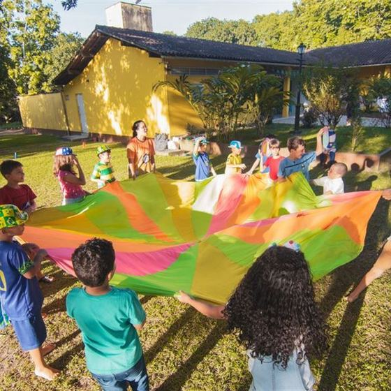
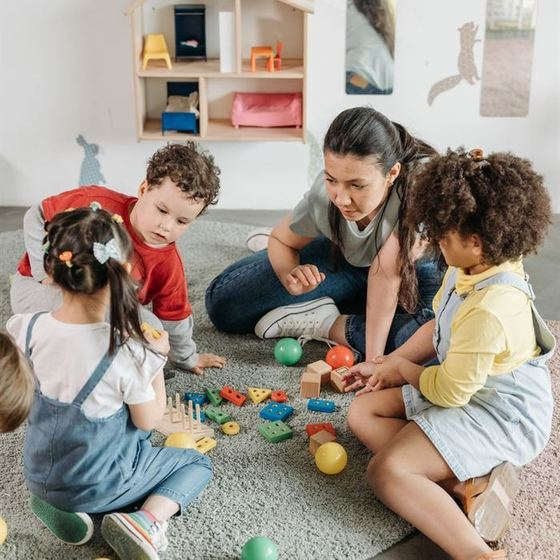
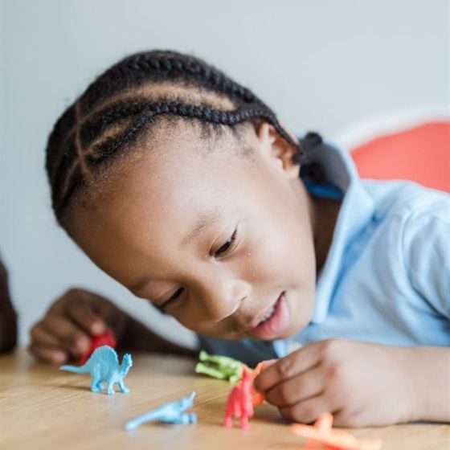
Grado preescolar (transición). La institución garantiza el derecho a la educación desde el grado preescolar, según el PEI.
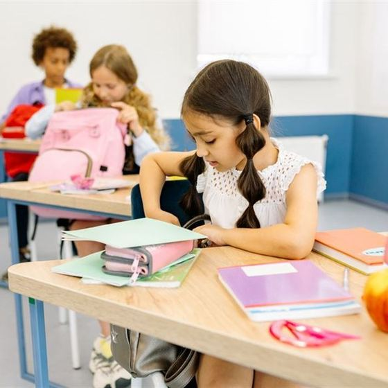
Grados 1.º a 5.º. Formación en valores, lectura, escritura, matemáticas y cuidado del entorno, con el territorio como aula.
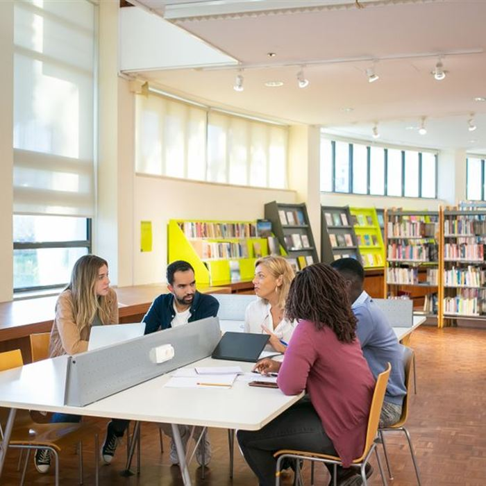
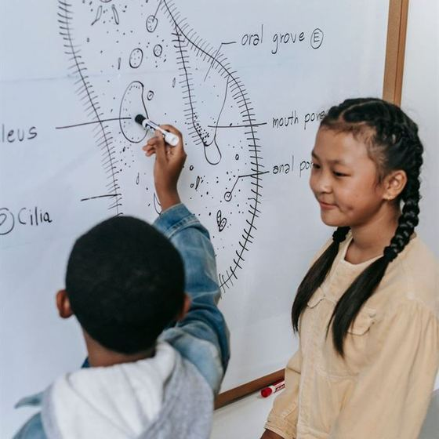
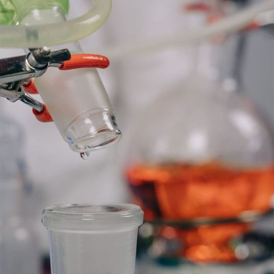
Grados 6.º a 9.º. Se fortalece el pensamiento crítico, la investigación, la ciencia y la tecnología, y el proyecto de vida del estudiante.
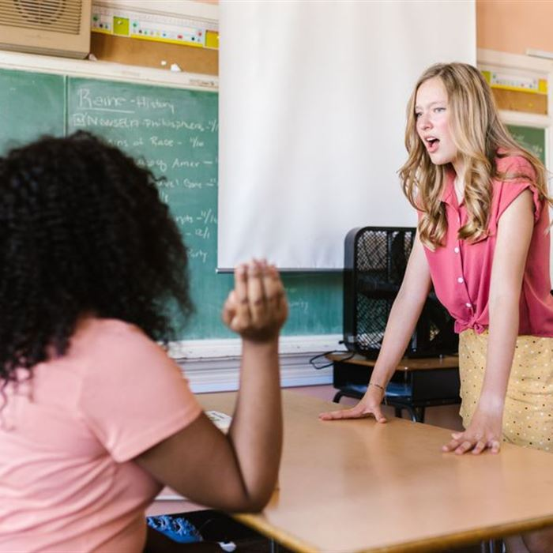
Grados 10.º y 11.º, modalidad académica. Bachillerato completo. El escudo oficial declara «Modalidad Académica» y la institución ofrece estos grados.
La institución cuenta con una sede central y diez sedes anexas de escuela rural, todas activas y con jornada única. La sede central atiende desde preescolar hasta el grado 11.º (educación media) y las sedes anexas ofrecen preescolar y básica primaria (hasta 5.º).
| Sede | Niveles o grados que atiende | Jornada | Modalidad | Estado |
|---|---|---|---|---|
| Sede Central — IER Puerto Rosario | Preescolar a 11.º (preescolar, básica primaria, básica secundaria y media) | Única (Decreto 2105) | Académica | Activa |
| ERM La Estrella | Preescolar a 5.º (básica primaria) | Única (Decreto 2105) | Académica | Activa |
| ERM San Rafael del Bombón | Preescolar a 5.º (básica primaria) | Única (Decreto 2105) | Académica | Activa |
| ERM San Cayetano | Preescolar a 5.º (básica primaria) | Única (Decreto 2105) | Académica | Activa |
| ERM San Luis | Preescolar a 5.º (básica primaria) | Única (Decreto 2105) | Académica | Activa |
| ERM El Porvenir | Preescolar a 5.º (básica primaria) | Única (Decreto 2105) | Académica | Activa |
| ERM Buenos Aires del Mandur | Preescolar a 5.º (básica primaria) | Única (Decreto 2105) | Académica | Activa |
| ERM Las Villas | Preescolar a 5.º (básica primaria) | Única (Decreto 2105) | Académica | Activa |
| ERM La Pedregosa | Preescolar a 5.º (básica primaria) | Única (Decreto 2105) | Académica | Activa |
| ERM Las Delicias de Alpamanga | Preescolar a 5.º (básica primaria) | Única (Decreto 2105) | Académica | En funcionamiento |
| ERM Nueva Unión | Preescolar a 5.º (básica primaria) | Única (Decreto 2105) | Académica | En funcionamiento |
Fuente: PEI 2025 y Resolución No. 0844 del 25 de febrero de 2015. Todas las sedes están activas y comparten la misma resolución de anexión y la jornada única.
Docentes de aula, docente PTA y rectoría de la institución, con la sede donde prestan su servicio durante el año escolar 2026.
Estos son los lugares donde transcurre la vida escolar en la sede principal. Las fotografías van cambiando para que reconozcas cada rincón de la institución.


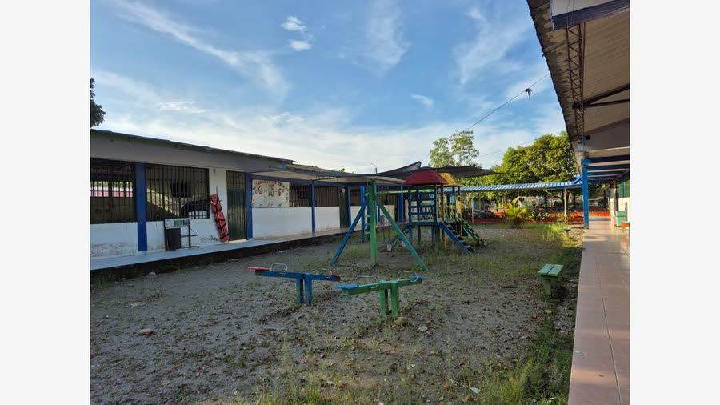
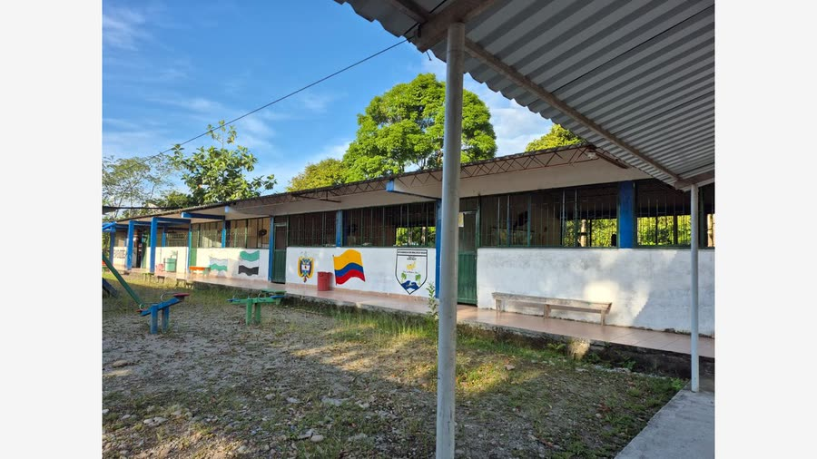
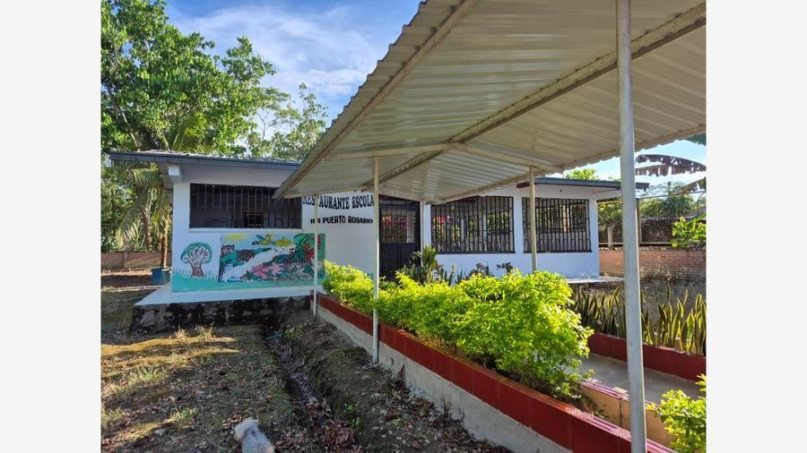
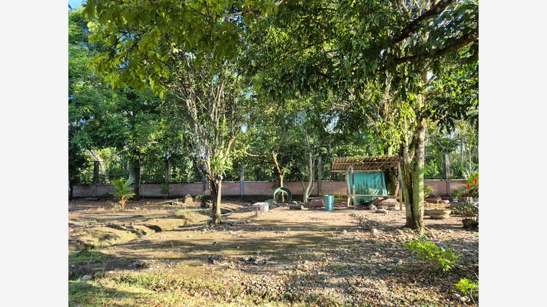
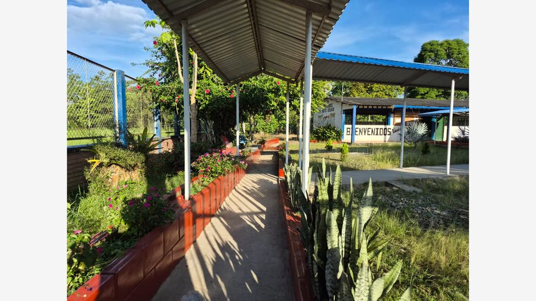
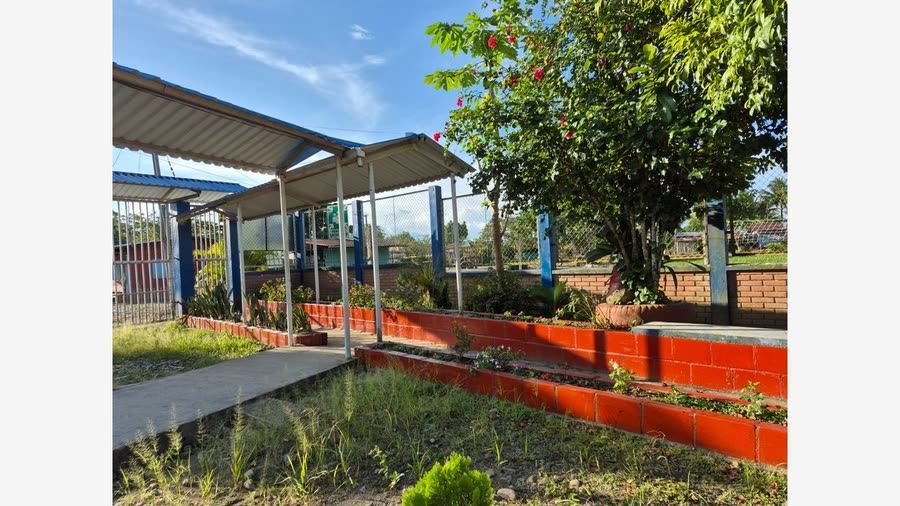
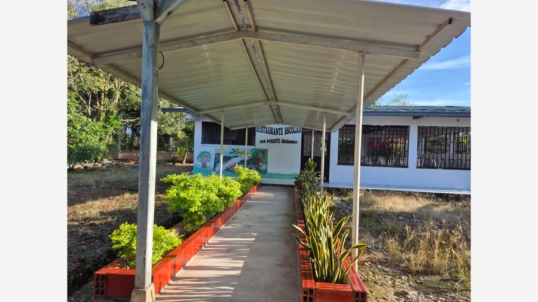
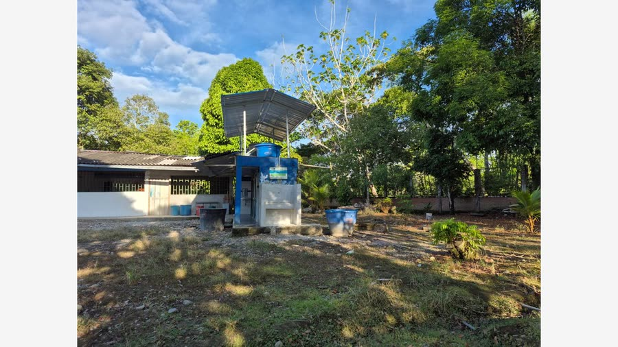
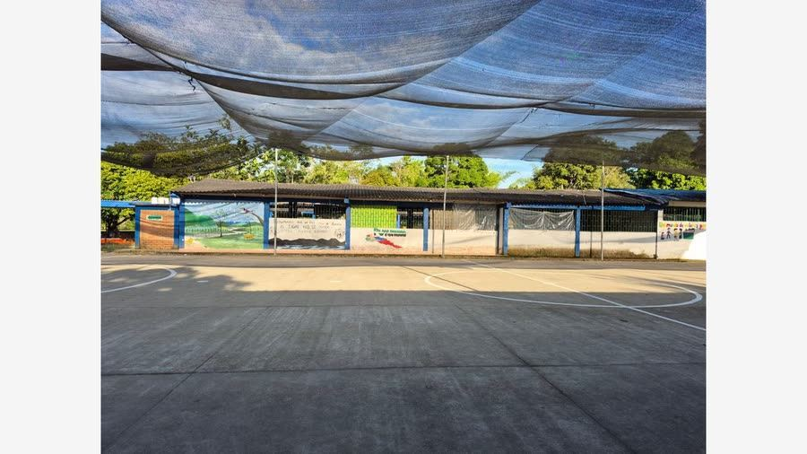
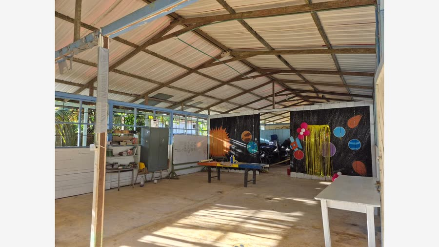
Horario de la sede principal (básica secundaria y educación media, grados 6.º a 11.º).
Jornada de 7 horas de clase, de 8:00 a. m. a 2:50 p. m., con descanso y almuerzo.
Cada horario se puede ver o imprimir en formato PDF y compartir como imagen.
Proyectos que los estudiantes desarrollan con su territorio como aula: indagación, prototipos, ferias de ciencia y tecnología, cuidado del medio ambiente y participación de las familias.
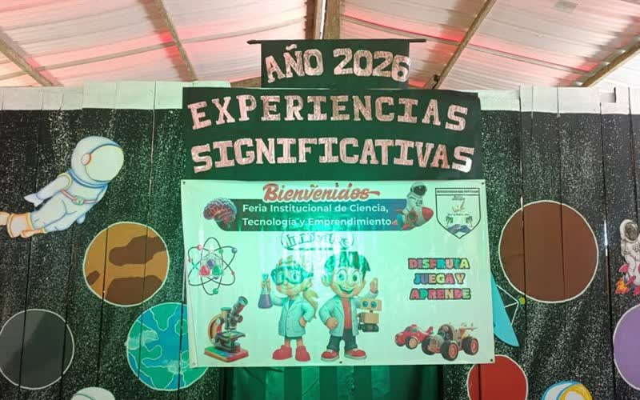
Una jornada completa dedicada a la inteligencia artificial: qué es, cómo se usa en el campo y en la vida diaria, y cómo se construye con herramientas libres.
Mostrando 6 proyectos.
Tecnología e Informática
Espacio para el uso responsable de herramientas digitales: ofimática, ciudadanía digital, mantenimiento básico de equipos y alfabetización digital de la comunidad.
Innovatec
Estrategia en la que los estudiantes detectan una necesidad de la vereda y prototipan soluciones con materiales reutilizables, acompañados por sus docentes.
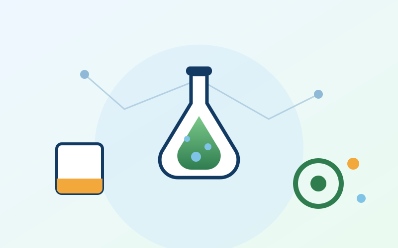
Ciencia, Tecnología e Innovación
Semillero que formula preguntas sobre el agua, el suelo y la biodiversidad del Putumayo y las responde con observación y registro de datos en el propio entorno.
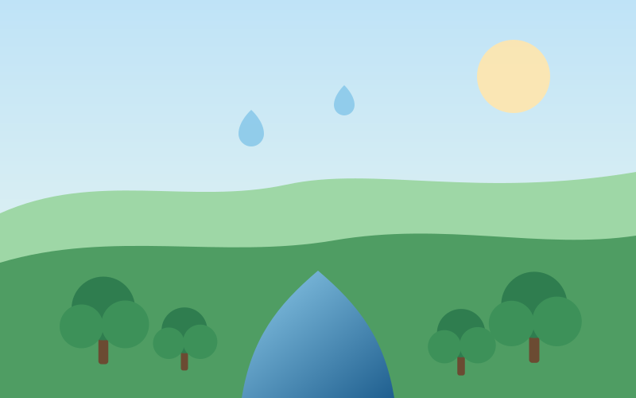
Medioambiente
Proyecto ambiental escolar: propagación de especies nativas, compostaje, huerta de aprendizaje y clasificación de residuos en la sede.
Lectura
Plan lector que combina biblioteca escolar, lectura en voz alta, escritura creativa y recopilación de relatos y saberes de las familias de la vereda.
Comunidad
Encuentros entre familias, estudiantes y docentes para fortalecer la crianza, la convivencia y el cuidado del entorno.
No hay proyectos en esta área todavía.
Publicaciones de la página oficial de Facebook de la institución, de la más reciente a la más antigua. Cada publicación conserva su texto completo y todas sus fotografías; las que tienen varias imágenes las muestran en rotación automática.
6 noticias
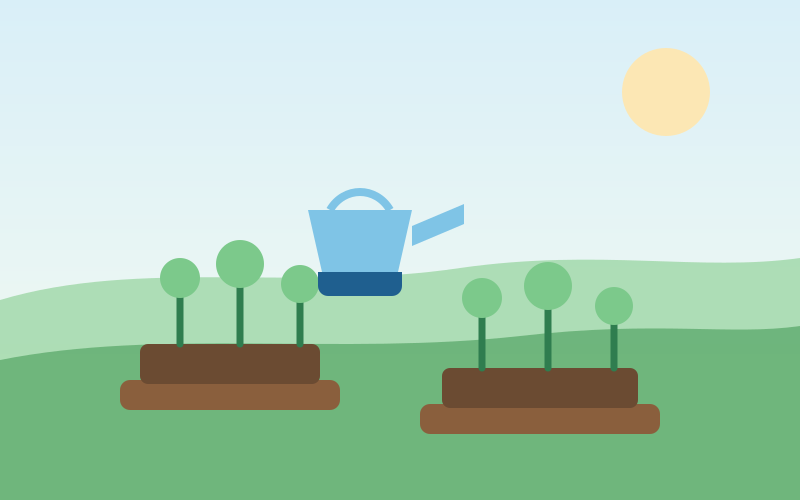
12 de septiembre de 2026 · Medioambiente
Nota informativa: estudiantes y familias preparan el terreno, siembran especies nativas y aprenden sobre el cuidado de las fuentes de agua cercanas a la vereda.
28 de agosto de 2026 · Tecnología
Nota informativa: talleres sobre uso seguro de internet, huella digital y convivencia en los entornos virtuales.
05 de agosto de 2026 · Cultura
Nota informativa: muestras artísticas, música tradicional y presentación de trabajos elaborados por los estudiantes.
21 de julio de 2026 · Ciencia
Nota informativa: exposición de experimentos y prototipos elaborados por los estudiantes con materiales del entorno.
19 de junio de 2026 · Lectura
Nota informativa: jornada de lectura compartida entre grados, con relatos recopilados de la tradición oral de la región.
30 de mayo de 2026 · Comunidad
Nota informativa: encuentro para compartir los avances del año escolar y escuchar las propuestas de las familias.
No se encontraron noticias que coincidan con tu búsqueda.
Estas publicaciones están en la página oficial de Facebook. Pulse el título para leerlas completas allí.
Recorridos por la institución, jornadas especiales y momentos de la comunidad educativa, en video.
Consulte y descargue los documentos oficiales de la institución, organizados por año. Elija el año que le interese y se desplegará la lista con cada documento listo para consultar o descargar en PDF o Word.
Seleccione un año para desplegar la lista de documentos disponibles para consultar y descargar.
Espacios de participación de estudiantes, familias, docentes y habitantes de la vereda. Los canales de participación todavía no están habilitados en este sitio.
Acompañamiento de las familias en el proceso formativo: encuentros, escuela de padres y comunicación con los docentes.
Personero, representantes de grupo y voceros que llevan la voz de los estudiantes a las instancias de decisión.
Acuerdos de convivencia, prevención del acoso escolar y rutas de atención para el cuidado de todas las personas.
Consejo Directivo, Consejo Académico, Consejo Estudiantil y Consejo de Padres como instancias de participación democrática.
Celebraciones, muestras artísticas, música tradicional y expresiones culturales de la región amazónica.
Trabajo conjunto con líderes veredales, juntas de acción comunal e instituciones del municipio en beneficio del territorio.
Sección preparada para la información institucional de carácter público. Este sitio no implementa todavía trámites, peticiones, quejas, reclamos ni formularios oficiales, y no se inventó ninguna información legal, resolución ni cifra.
Aviso importante. Hasta que la institución habilite canales formales, cualquier solicitud debe radicarse por los medios oficiales que la institución y la Secretaría de Educación del Putumayo den a conocer. Los espacios de esta sección están marcados como Por implementar.
Datos generales de la institución, naturaleza jurídica, sedes y responsables, cuando la institución los publique.
Actos administrativos y normatividad aplicable. No se publicará ninguna resolución hasta recibir el documento y su número real.
Espacio para informes de gestión y encuentros de rendición de cuentas con la comunidad.
Formulario de peticiones, quejas, reclamos y sugerencias (PQRS). Todavía no está habilitado.
Correo electrónico, teléfono y horarios oficiales de atención al público.
Canales oficiales de la institución: correo electrónico, teléfono y página de Facebook.
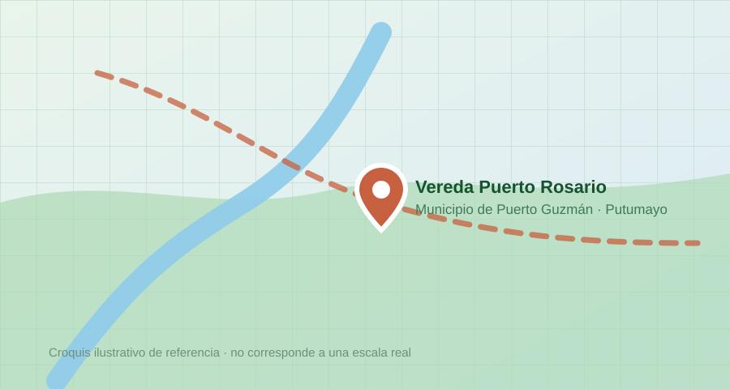
Área: Tecnología e Informática.
la sala de informática es un espacio para aprender a usar herramientas digitales de manera responsable y segura, apoyar las demás áreas del conocimiento y prestar servicio a la comunidad cuando sea posible.
Descripción del proyecto institucional, editable desde el panel de rectoría.
Área: Innovatec.
estrategia en la que los estudiantes identifican una necesidad concreta de su vereda y construyen un prototipo sencillo para atenderla, usando materiales del entorno y trabajo en equipo.
Vista de detalle del proyecto institucional.
Área: Ciencia, Tecnología e Innovación.
los estudiantes formulan preguntas sobre el agua, el suelo y la biodiversidad de la región y las responden mediante observación, medición y registro sistemático de datos en campo.
Vista de detalle del proyecto institucional.
Área: Medioambiente (proyecto ambiental escolar).
acciones de educación ambiental en el colegio y en la vereda: propagación de especies nativas, compostaje, huerta de aprendizaje y manejo adecuado de los residuos.
Vista de detalle del proyecto institucional.
Área: Lectura y biblioteca escolar.
plan que articula la biblioteca escolar, la lectura en voz alta, la escritura creativa y la recopilación de relatos y saberes de las familias de la vereda.
Vista de detalle del proyecto institucional.
Área: Comunidad y convivencia.
encuentros periódicos entre familias, estudiantes y docentes para fortalecer la crianza respetuosa, la convivencia y el cuidado del entorno.
Vista de detalle del proyecto institucional.
Para leer el detalle completo de la publicación (texto, fecha y fotografías), consulta la sección de noticias con JavaScript activado o entra a la publicación original.
Para leer el detalle completo de la publicación, consulta la sección de noticias con JavaScript activado o entra a la publicación original.
Para leer el detalle completo de la publicación, consulta la sección de noticias con JavaScript activado o entra a la publicación original.
Para leer el detalle completo de la publicación, consulta la sección de noticias con JavaScript activado o entra a la publicación original.
Para leer el detalle completo de la publicación, consulta la sección de noticias con JavaScript activado o entra a la publicación original.
Para leer el detalle completo de la publicación, consulta la sección de noticias con JavaScript activado o entra a la publicación original.